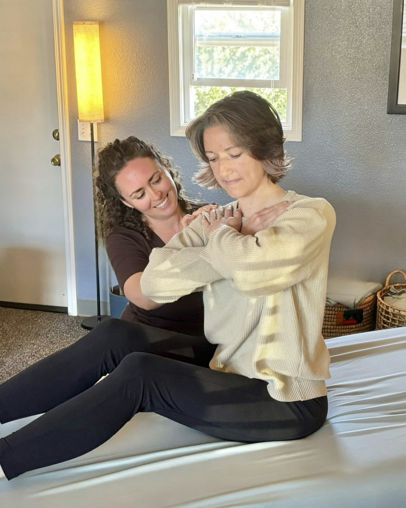
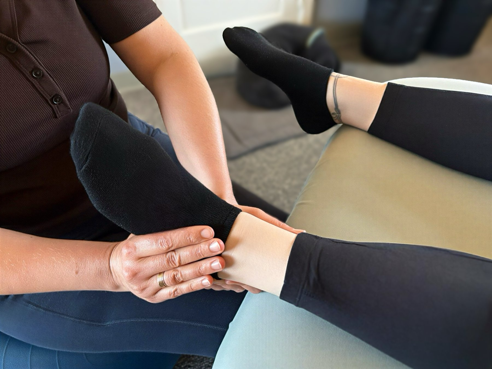
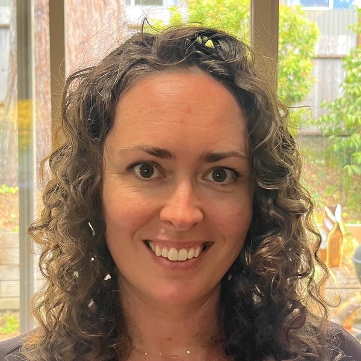

Muscle Activation Techniques® · McKinleyville, California
Gentle, precise, hands-on work that reconnects your nervous system with the muscles it stopped talking to, so your body can finally stop bracing.
The method
MAT® is a hands-on process developed over 30 years ago by biomechanics specialist Greg Roskopf, used today by professional athletes and everyday bodies alike. It looks at pain and tightness through a different lens: when a muscle loses clear communication with the nervous system, it quietly goes offline, and neighboring muscles tighten up to protect the joint it was supposed to steady.
Stretching, massage, and adjustments work on the tight, protective side of that equation. MAT works on the cause: it finds exactly which muscles have gone quiet and wakes them back up with precise palpation and low-force isometrics.

By the numbers

The process
What to expect: you stay fully clothed; the work is gentle and specific, no cracking, no deep-pressure bracing. Early on, sessions work best close together, weekly when schedules allow. Six sessions is usually when Juliet really starts to understand what your body is doing, and longer injury histories can take more. From there, sessions space out as your body holds the work.
Is this for me?
Work on the tight, protective tissue: relief that feels good and often returns by next week, because the underlying instability is still there.
Finds the muscles that have gone quiet and gently wakes them back up, so the tightness has a reason to let go, and stay gone.
Kind words
“Juliet has been amazing at healing my body’s injuries, aches, and pains. She is an excellent listener which helps her identify how best to help you. She is generous with her knowledge, regularly sharing exercises and palpations I can do to help keep my muscles activated and pain-free. I like to tell her that she has ‘magic hands’ because I always feel so much better after a session with her.”
Lisa Cardenas
Sessions & rates
Every visit is the same flat rate: no packages to decode, no upsells. Whether it’s your first full assessment or a maintenance tune-up, a session is $100.
Health, injury & movement history, a full comparative assessment, your first round of activation, and a plan for the weeks ahead.
Download the intake form (PDF) to fill out ahead of time if you like, or fill it out together at your first visit.
Close together at first, weekly when schedules allow, then spacing out to monthly or seasonal tune-ups as your body holds the work.
Contact

Sessions are by appointment: call, text, or email and Juliet will find a time that fits.
One conversation is enough to find out whether MAT makes sense for what you’re carrying.
Get in touch